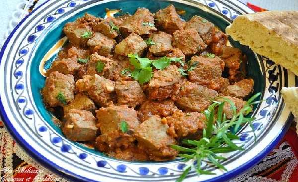

CousCous

What Is Kbda Mchrmla?
Kbda Mcharmla is a traditional Algerian dish made with liver, usually from lamb or beef, cooked
in a rich and spicy tomato-based sauce. It’s bold, flavorful, and typically served with bread
to soak up the sauce.
Ingrediants
- Liver (lamb or beef)
- Garlic
- Tomato paste or grated tomatoes
- Olive oil
- Spices like cumin, paprika, Black pepper, and salt
- optional: chopped parsley or lemon juice for garnish
Preparing Steps:
-
Clean and cut the liver
Wash the liver well, remove membranes or veins if needed, and cut it into bite-sized pieces.
-
Sauté garlic and spices
In a pan, heat olive oil and add finely chopped garlic. Stir in spices like paprika, cumin, pepper, and salt.
-
Add tomato base
Add tomato paste or grated tomato to the pan. Cook until the mixture becomes a thick, fragrant sauce.
-
Cook the liver
Add the liver pieces and cook on medium heat for about 10–15 minutes until tender and coated in the sauce.
-
Serve hot
Serve immediately with fresh bread. Optional: sprinkle chopped parsley or squeeze some lemon juice on top for extra flavor.
Why You'll Love It:
Kbda Mcharmla is quick to prepare, deeply flavorful, and packed with protein. It’s perfect for lovers of bold, spicy dishes and Algerian comfort food.
Back to recipes